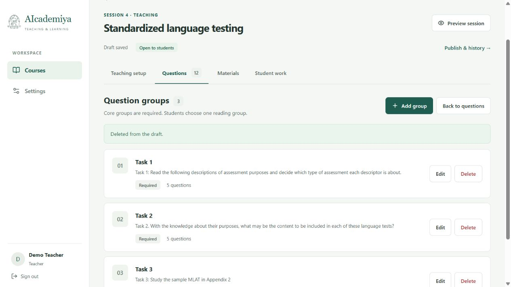
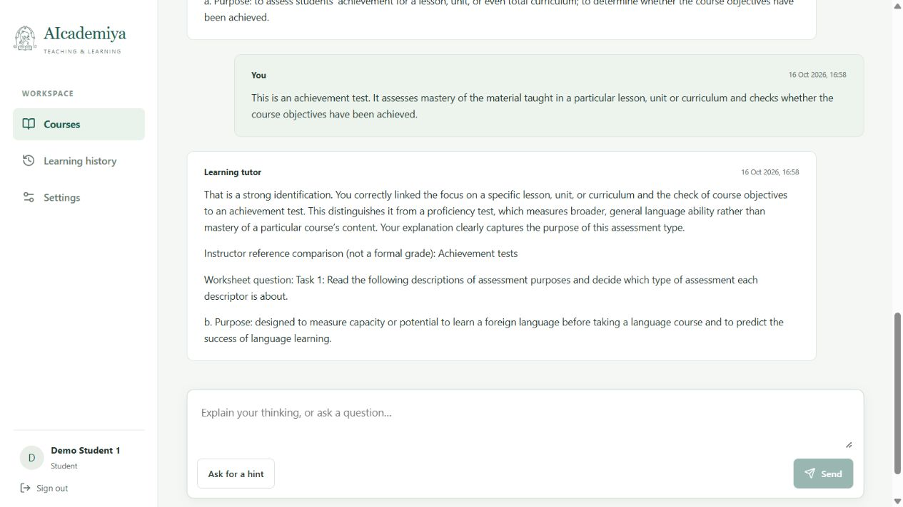
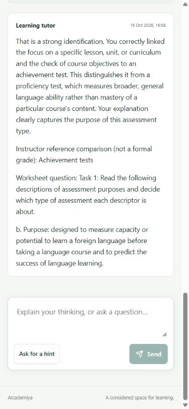
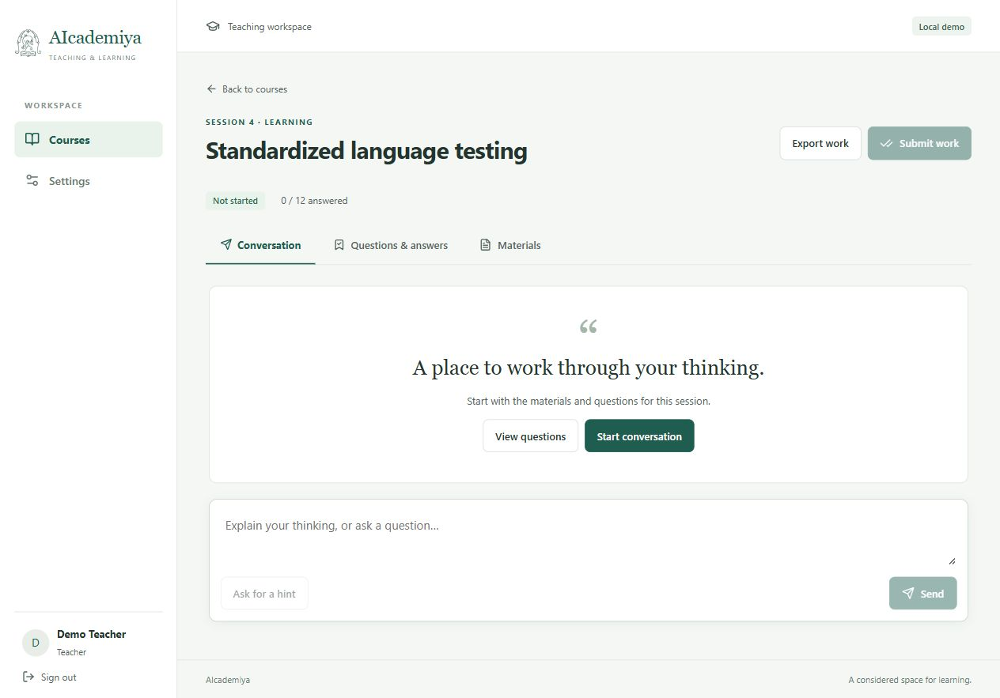
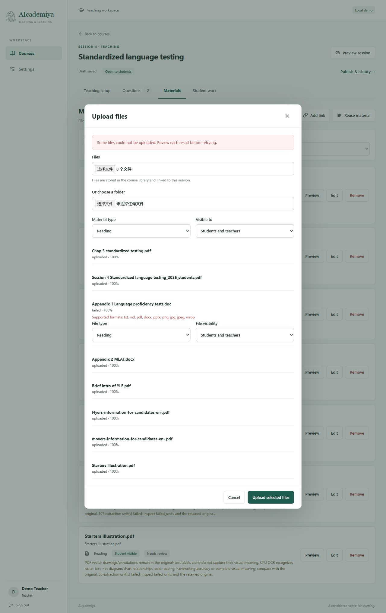
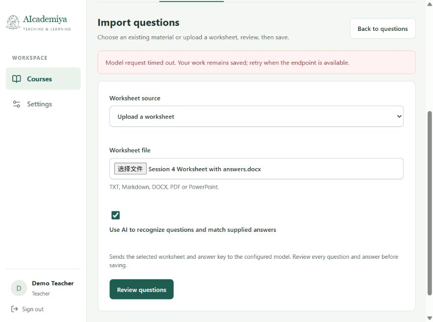
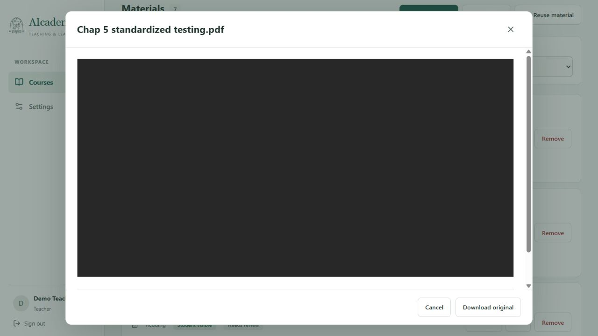

2026 年 10 月 16 日 · 分支 vue-java-cys · 本机运行，未提交或推送代码。
课程资料已整理；12 道题及参考答案已逐项核对保存。发布、学生加入、真实 AI 开场与首题纠错、刷新恢复、学习记录导出已验证。
从用户提供的 ZIP 解压到 C:\Users\user\Desktop\zzm\app\local-materials\Session 4，保留 10 个文件。题目及答案来自 Session 4 Worksheet with answers.docx；提示词来自 Session 4 Instruction for AI Bot.docx，原文段落已检查完整保存。
误放的 From Case Study to Multimodal Presentation [Final][with Notes].pptx 已移入 C:\Users\user\Desktop\智能体回收站\垃圾桶\zzm-session4-20261016。用户原 ZIP 保留，未永久删除文件。
| 检查项 | 结果 |
|---|---|
| 题目和答案 | 12 题，3 组，12 份答案与源文档一致；按原文人工核对后通过导入提交接口保存，并在页面复查。 |
| 提示词 | 通过页面导入并保存，源文档非空段落均能在保存内容中找到。 |
| 教师操作 | 题目编辑、资料关联、空分组删除、发布及教师查看学生进度正常。 |
| 学生操作 | 邀请码加入课程成功；12 题、7 份公开资料可见；首题错误回答给提示，改正后给示例并进入第二题。 |
| 真实 AI | Qwen/Qwen3.8-27B；短连接测试约 1.63 秒；取得 4 条真实辅导回复，接口记录为 openai 模式。 |
| 答案隔离 | 学生数据不含教师提示词、全部参考答案或含答案的工作表；直接下载教师工作表返回 403，未尝试作答时读取参考答案返回 409。 |
| 刷新和导出 | 保存的首题答案及对话可恢复；实际下载 JSON 为 253507 字节、7 条消息，未夹带上述教师内容。当前停在第 2 题，未最终提交。 |
| 桌面与窄屏 | 目视检查教师设置、题目、材料、预览、发布、学生对话；390 × 844 视口下资料和对话的内容宽度与滚动宽度均为 375 像素，无横向溢出。 |
| 针对性检查 | 后端 60 项通过、3 项跳过；前端 10 项通过；Vue 类型检查及构建通过。自动测试使用合成数据，不替代真实接口验收。 |
整份工作表的 AI 自动识别未通过。120 秒请求超时，300 秒重试也返回超时；短对话可用不等于长文档识别可用。本次使用人工核对的 12 题继续验收，未将其记为自动识别成功。等待上限已恢复为配置文件中的 120 秒。
旧版 DOC 与扫描资料尚有缺口。Appendix 1 Language proficiency tests.doc 不支持上传；本机缺少 OCR，教材第 5 章提取文字为 0，MLAT 附录仅 59 字符。其他 PDF 读到了部分原生文字，不能据此认定图片内容已被理解。
PDF 预览需继续确认。接口返回 200，但内置浏览器显示黑色区域，未验证其他浏览器。原文件均保留。
字符数是保存的文本预览长度，不代表所有文字都进入每次模型请求，也不代表视觉内容已经识别。
| 文件 | 可见性 | 字符数 | 状态说明 |
|---|---|---|---|
| Chap 5 standardized testing.pdf | 学生与教师 | 0 | 需人工审阅；图片文字未完整提取 |
| Session 4 Standardized language testing_2026_students.pdf | 学生与教师 | 27035 | 需人工审阅；图片文字未完整提取 |
| Appendix 2 MLAT.docx | 学生与教师 | 59 | 需人工审阅；图片文字未完整提取 |
| Brief intro of YLE.pdf | 学生与教师 | 9301 | 需人工审阅；图片文字未完整提取 |
| Flyers-information-for-candidates-en-.pdf | 学生与教师 | 24507 | 需人工审阅；图片文字未完整提取 |
| movers-information-for-candidates-en-.pdf | 学生与教师 | 23857 | 需人工审阅；图片文字未完整提取 |
| Starters illustration.pdf | 学生与教师 | 18618 | 需人工审阅；图片文字未完整提取 |
| Session 4 Worksheet with answers.docx | 仅教师 | 6015 | 已核对题目与答案；原文保留 |
兼容缺少编号定义部件的 DOCX；开放导入页的 AI 识别选项，保留空结果的错误提示；提高工作表结构化请求的输出预算，按硅基流动官方对话接口使用 JSON 输出；修正初始输入框遮挡按钮、同条回复重复题干两处界面问题。
未运行完整 12 题对话、可选测验、阅读讨论、最终提交或教师评价；未验收提示词中的自动闲置提示和输出语速要求。上述功能不列为通过项。代码、课程数据及原资料留在本机，供用户继续手动验证。
测试脚本、测试缓存、失败导入的中间文件、导出测试文件与构建日志已移入指定垃圾桶；正式课程资料、当前构建和运行服务保留。查看清理清单。






